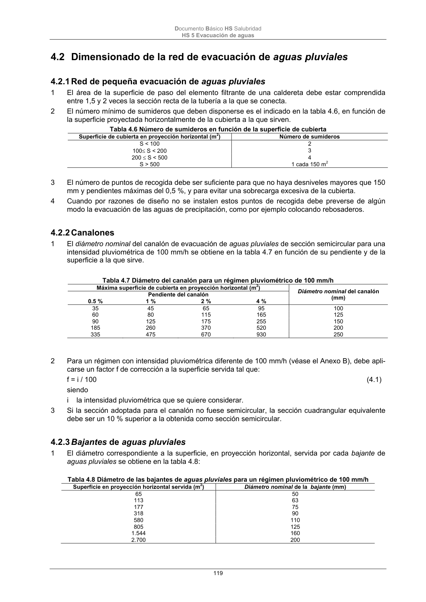

DB-HS Salubridad · edición 2022-06-14 · capa oficial
Documento DB-HS-oficial · SHA-256 del PDF 68df3caacc95f71aee2ec1ba7b2c65ae66155c21e3a8785521b8fdd4fd640d3b
Copia fiel del PDF fuente · Fuente oficial
Ficha de la disposición en la fuente oficial
Formatos: JSON del segmento · Markdown
4.2.2 Canalones 1 El diámetro nominal del canalón de evacuación de aguas pluviales de sección semicircular para una intensidad pluviométrica de 100 mm/h se obtiene en la tabla 4.7 en función de su pendiente y de la superficie a la que sirve. Tabla 4.7 Diámetro del canalón para un régimen pluviométrico de 100 mm/h Máxima superficie de cubierta en proyección horizontal (m 2) Diámetro nominal del canalón (mm) Pendiente del canalón 0.5 % 1 % 2 % 4 % 35 45 65 95 100 60 80 115 165 125 90 125 175 255 150 185 260 370 520 200 335 475 670 930 250 2 Para un régimen con intensidad pluviométrica diferente de 100 mm/h (véase el Anexo B), debe apli- carse un factor f de corrección a la superficie servida tal que: f = i / 100 (4.1) siendo i la intensidad pluviométrica que se quiere considerar. 3 Si la sección adoptada para el canalón no fuese semicircular, la sección cuadrangular equivalente debe ser un 10 % superior a la obtenida como sección semicircular.
